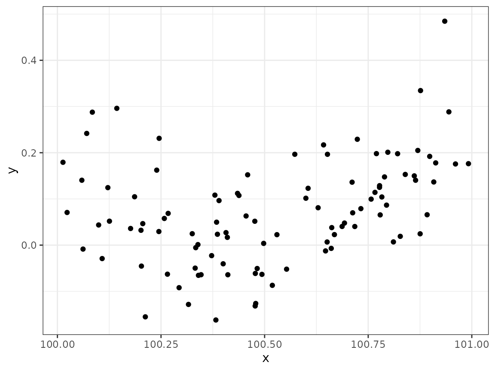
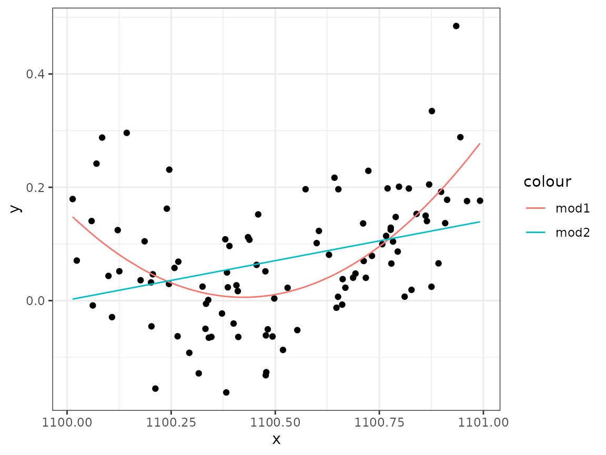

Tutorial 08: Floating point computations and least squares (solutions)
Finn Lindgren
Source:vignettes/Tutorial08Solutions.Rmd
Tutorial08Solutions.RmdIntroduction
In this lab session you will explore
- Speed of matrix computations
- Floating point accuracy in least squares estimation of statistical linear models
- Open your github repository clone project from Lab 2 (either on https://rstudio.cloud or on your own computer and upgrade the
StatCompLabpackage (see theLab03vignette for more details) - During this lab, you can work in a
.Rfile, but working with code chunks in a.Rmdis highly recommended. - Make sure you update the
StatCompLabpackage to version 0.8.2 or higher.
For measuring relative running times of different methods, we’ll use the bench package. You won’t need to load the package with library. Instead, check if bench::mark() runs without errors. If it doesn’t, and it’s because the package is not installed, then install it with install.packages("bench") in the R Console.
Suggested code for the setup code chunk:
Numerical speed
Define the following function for computing a vector norm:
vec_norm <- function(x) {
sum(x^2)^0.5
}Try it on a simple vector where you can verify that the result is correct, e.g.
## [1] 3.741657 3.741657We will now take a look at the computational speed of matrix operations.
First construct a vector \(\boldsymbol{b}\) and matrix \(\boldsymbol{A}\):
Let’s check the speed difference between \(\boldsymbol{A}^\top\boldsymbol{b}\) and \((\boldsymbol{b}^\top\boldsymbol{A})^\top\) (convince yourself that the two expressions would be equivalent in exact arithmetic, and possibly also in floating point arithmetic). The function t() construct the transpose of a matrix. Note that when b is a vector (as opposed to a single-column matrix) it is interpreted as either a column vector or a row vector, depending on the operation. When b is a vector, as.matrix(b) is always a single-column matrix, and t(b) is a single-row matrix, but b %*% A is interpreted as t(b) %*% A.
Which method for computing \(\boldsymbol{A}^\top \boldsymbol{b}\) is faster? Use bench::mark() to compare the different ways of evaluating the expression. By extracting the variables expression, median, and itr/sec from the bench::mark() output using the select() function, we can summarise the results in a table.
Solution:
bm <- bench::mark(
t(A) %*% b,
t(t(b) %*% A),
t(b %*% A)
)
knitr::kable(bm %>% select(expression, median, `itr/sec`))| expression | median | itr/sec |
|---|---|---|
| t(A) %*% b | 79.6ms | 12.58946 |
| t(t(b) %*% A) | 22.3ms | 44.11257 |
| t(b %*% A) | 22.3ms | 44.30371 |
To save typing, define a function bench_table that does the kable printing:
bench_table <- function(bm) {
knitr::kable(
bm %>%
select(expression, median, `itr/sec`)
)
}Solution:
The t(A) %*% b method is the slowest implementation. Transposing a matrix requires copying the values to new locations. Transposing a vector doesn’t require any copying.
For \(\boldsymbol{A}\boldsymbol{B}\boldsymbol{b}\), the order in which matrix&vector multiplication is done is important. Define these new variables:
m <- 1000
n <- 1000
p <- 1000
A <- matrix(rnorm(m * n), m, n)
B <- matrix(rnorm(n * p), n, p)
b <- rnorm(p)Compare the running times of A %*% B %*% b, (A %*% B) %*% b, and A %*% (B %*% b)).
Solution:
bm <- bench::mark(
A %*% B %*% b,
(A %*% B) %*% b,
A %*% (B %*% b)
)
bench_table(bm)| expression | median | itr/sec |
|---|---|---|
| A %% B %% b | 778.23ms | 1.284974 |
| (A %% B) %% b | 801.22ms | 1.248093 |
| A %% (B %% b) | 2.37ms | 414.584280 |
The three versions should produce very similar numerical results (bench::mark will complain if they don’t) Which method is fastest? Why? Are the computed results the same?
Solution:
One matrix-matrix multiplication is very expensive compared with matrix-vector multiplication. The results are numerically very close, and one can likely express bounds for them in terms of .Machine$double.eps and \(m,n,p\).
For a square matrix \(\boldsymbol{A}\) of size \(1000\times 1000\), compare the cost of solve(A) %*% b (Get the matrix inverse \(\boldsymbol{A}^{-1}\), then multiply with \(\boldsymbol{b}\)) against the cost of solve(A, b) (Solve the linear system \(\boldsymbol{A}\boldsymbol{u}=\boldsymbol{b}\)).
Solution:
bm <- bench::mark(
solve(A) %*% b,
solve(A, b),
check = FALSE # The results will differ by approximately 8e-13
)
bench_table(bm)| expression | median | itr/sec |
|---|---|---|
| solve(A) %*% b | 926ms | 1.079715 |
| solve(A, b) | 288ms | 3.477726 |
Numerical Least Squares estimation
You’ll now investigate some numerical issues when doing numerical least squares estimation.
Run the following code that generates synthetic observations from a linear model \[ \begin{aligned} y_i &= \frac{x_i-100.5}{5} + (x_i-100.5)^2 + e_i, \end{aligned} \] where \(e_i \sim \mathsf{Normal}(0, \sigma_e=0.1)\), independent, \(i=1,\dots,n=100\).
## Set the "seed" for the random number sequences, so we can
## reproduce exactly the same random numbers every time we run the code
set.seed(1)
## Simulate the data
# x: 100 random numbers between 100 and 101
data <- data.frame(x = 100 + sort(runif(100)))
# y: random variation around a quadratic function:
data <- data %>%
mutate(y = (x - 100.5) / 5 + (x - 100.5)^2 + rnorm(n(), sd = 0.1))Let’s plot the data we have stored in the data.frame:
ggplot(data) + geom_point(aes(x, y))
What are the true values of \(\beta_0\), \(\beta_1\), and \(\beta_2\) in the standardised model formulation, \[ \begin{aligned} y_i &= \mu_i + e_i = \beta_0 + \beta_1 x_i + \beta_2 x_i^2 + e_i ? \end{aligned} \] Hint: Identify the values by matching the terms when expanding the initial model definition above.
Solution:
\[ \begin{aligned} \beta_0 &= -\frac{100.5}{5} + 100.5^2 = 10080.15 \\ \beta_1 &= \frac{1}{5} - 201 = -200.8 \\ \beta_2 &= 1 \end{aligned} \]
Create a beta_true vector containing \((\beta_0, \beta_1, \beta_2)\):
Solution:
beta_true <- c(10080.15, -200.8, 1)
# beta_0 = -100.5/5 + 100.5^2 = 10080.15
# beta_1 = 1/5 - 201 = -200.8
# beta_2 = 1Use these \(\beta\)-values to plot the quadratic true model predictor function as a function of \(x\in[100,101]\), together with the observations, and the estimate provided by lm(). Since the observed \(x\) values are relatively dense, we don’t necessarily need a special plot sequence of \(x\) values, but can reuse the observed values, and the model predictions for those value can be obtained with the fitted() method. In the lm() formula specification, use + I(x^2) for the quadratic term. This tells lm() to first compute x^2, and then use the result as a new covariate. The I() method can be interpreted as “use the computed value of this instead of other possible special meanings of the expression”.
Solution:
data <- data %>%
mutate(mu_true = beta_true[1] + beta_true[2] * x + beta_true[3] * x^2)
pl <- ggplot(data) +
geom_point(aes(x, y)) +
geom_line(aes(x, mu_true, col ="True"))
## lm manages to estimate the regression:
mod1 <- lm(y ~ x + I(x^2), data = data)
## Add the fitted curve:
pl +
geom_line(aes(x, fitted(mod1), col = "Estimated"))
Use the model.matrix(mod1) function to extract the \(\boldsymbol{X}\) matrix for the vector formulation of the model, \(\boldsymbol{y}=\boldsymbol{X}\boldsymbol{\beta}+\boldsymbol{e}\), and store in X1. (See ?model.matrix for more information). Then use the direct normal equations solve shown in Lecture 8, \((\boldsymbol{X}^\top\boldsymbol{X})^{-1}\boldsymbol{X}^\top\boldsymbol{y}\), to estimate the \(\beta\) parameters. Does it work?
Solution:
X1 <- model.matrix(mod1)
# To allow the tutorial document to keep running even in case of errors, wrap in try()
try(
beta.hat <- solve(t(X1) %*% X1, t(X1) %*% data$y)
)## Error in solve.default(t(X1) %*% X1, t(X1) %*% data$y) :
## system is computationally singular: reciprocal condition number = 3.9864e-19Shifted covariate
What if the whole model was shifted to the right, so that we were given \(x+1000\) instead of the original \(x\)-values? The model expression would still be able to represent the same quadratic expression but with different \(\beta\) values. Create a new data set:
data2 <- data %>%
mutate(x = x + 1000)Estimate the model using lm() for this new data set. Does it work?
Solution:
mod2 <- lm(y ~ x + I(x^2), data = data2)
ggplot(data2) +
geom_point(aes(x, y)) +
geom_line(aes(x, fitted(mod1), col = "mod1")) +
geom_line(aes(x, fitted(mod2), col = "mod2"))
# lm() fails to fit the correct curve, without warning!lm() fails to fit the correct curve, without warning!
The default for lm() is to allow singular models, and “fix” the problem by removing co-linear columns of the model matrix. We can ask it to disallow singular models with the singular.ok argument.
Solution:
## Error in lm.fit(x, y, offset = offset, singular.ok = singular.ok, ...) :
## singular fit encountered
# Now lm refuses to compute an estimate.Define a function cond_nr() taking a matrix X as input and returning the condition number, computed with the help of svd (see Lecture 8 for a code example for the condition number).
Solution:
With the help of model.matrix, examine the condition numbers of the model matrices in the two cases from the previous tasks. lm() computes the fit using the QR decomposition approach, not by direct solution of the normal equations. Why was the second lm() fit so bad?
Solution:
cond_nr(X1)## [1] 1560769713
# large, but somewhat manageable condition number
X2 <- model.matrix(mod2)
cond_nr(X2)## [1] 2.242481e+13
# very large condition number,
# but not large enough to trigger a warning!Plot the second and third columns of the model matrix X2 against each other, and use cor to examine their correlation (see ?cor). How does this explain the large condition number?
cor(X2[, 2:3])## x I(x^2)
## x 1 1
## I(x^2) 1 1
## Very close to co-linearSolution:
In both cases the columns are virtually co-linear, which leads to a very small \(d_3\) value, and therefore a large condition number.
Since the linear model says simply that the expected value vector \(\mathsf{E}(\boldsymbol{y})\) lies in the space spanned by the columns of \(\boldsymbol{X}\), one possibility is to attempt to arrive at a better conditioned \(\boldsymbol{X}\) by linear rescaling and/or recombination of its columns. This is always equivalent to a linear re-parameterization.
Try this on the model matrix of the model that causes lm() to fail. In particular, for each column (except the intercept column) subtract the column mean (e.g., try the sweep() and colMeans() functions, see example code below). Then divide each column (except the intercept column) by its standard deviation. Find the condition number of the new model matrix. Fit the model with this model matrix using something like mod3 <- lm(y ~ x1 + x2 + x3 - 1, data = data3)
Produce a plot that confirms that the resulting fit is sensible now.
Solution:
## Solution code:
mean_vec <- colMeans(X2[, 2:3])
sd_vec <- c(sd(X2[, 2]), sd(X2[, 3]))
X3 <- cbind(
X2[, 1],
sweep(X2[, 2:3], 2, mean_vec, FUN = "-")
)
X3[, 2:3] <-
sweep(X3[, 2:3], 2, sd_vec, FUN = "/")
data3 <- data2 %>%
mutate(x1 = X3[, 1], x2 = X3[, 2], x3 = X3[, 3])
mod3 <- lm(y ~ x1 + x2 + x3 - 1, data = data3)
ggplot(data3) +
geom_point(aes(x, y)) +
geom_line(aes(x, fitted(mod3)))
Note: If the data is split into estimation and test sets, the same transformation must be applied to the test data, using the scaling parameters derived from the observation data. Therefore the scale() function isn’t very useful for this. Instead, explicitly computing and storing the transformation information is necessary.
Compute the condition numbers for X2 and X3. Also compute the correlation between column 2 and 3 of X3 (subtract \(1\) to see how close to \(1\) it is).
Solution:
c(cond_nr(X2), cond_nr(X3))## [1] 2.242481e+13 1.791760e+04## [1] -6.229745e-09 -6.229745e-09Did subtracting and rescaling help?
Solution:
Yes, the condition number was significantly reduced. The correlation between the columns is however still very close to 1, meaning that the matrix is still close to singular.
An alternative fix is to subtract the mean x value from the original x vector before defining the quadratic model. Try this and see what happens to the condition number and column correlations of the model matrix. First, construct the modified data:
## Data setup:
data4 <- data2 %>%
mutate(x_shifted = x - mean(x))Solution:
mod4 <- lm(y ~ x_shifted + I(x_shifted^2), data = data4)
ggplot(data4) +
geom_point(aes(x, y)) +
geom_line(aes(x, fitted(mod4)))
X4 <- model.matrix(mod4)
cond_nr(X4)## [1] 15.36915
cor(X4[, 2], X4[, 3])## [1] -0.09094755Different methods for modifying the inputs and model definitions require different calculations for compensating in the model parameters, and has to be figured out for each case separately. The most common effect is to change the interpretation of the \(\beta_0\) parameter.